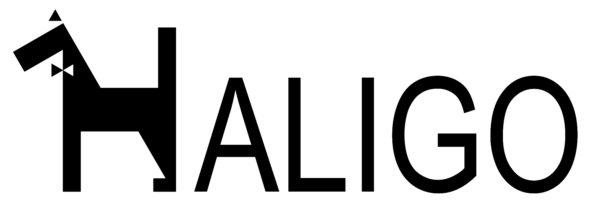
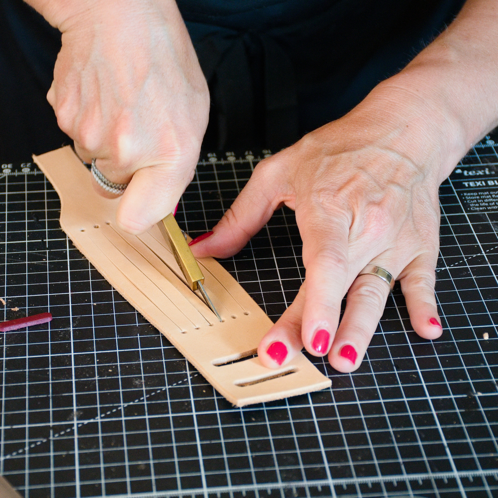
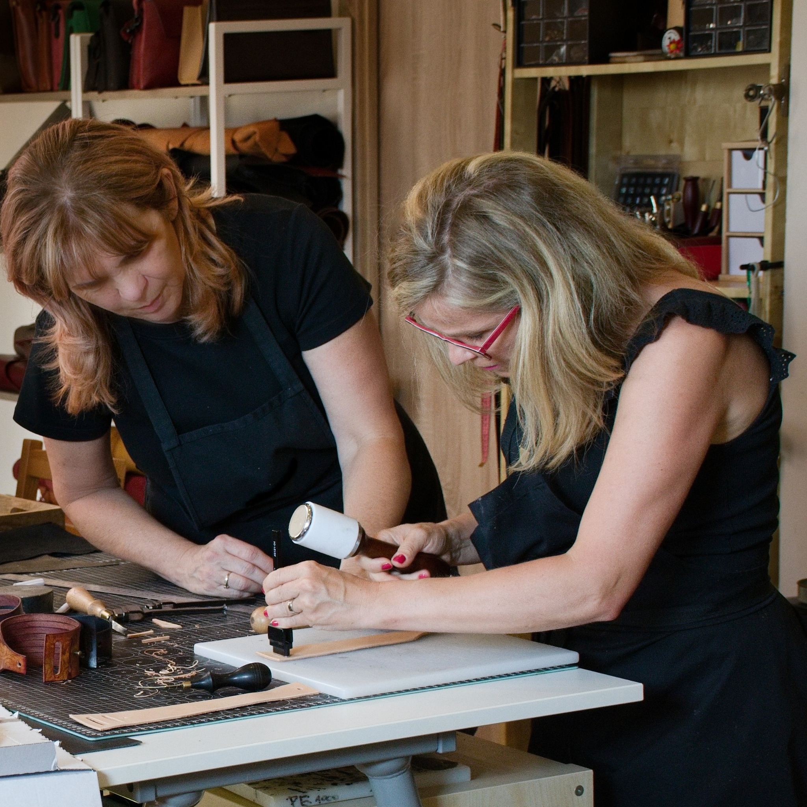
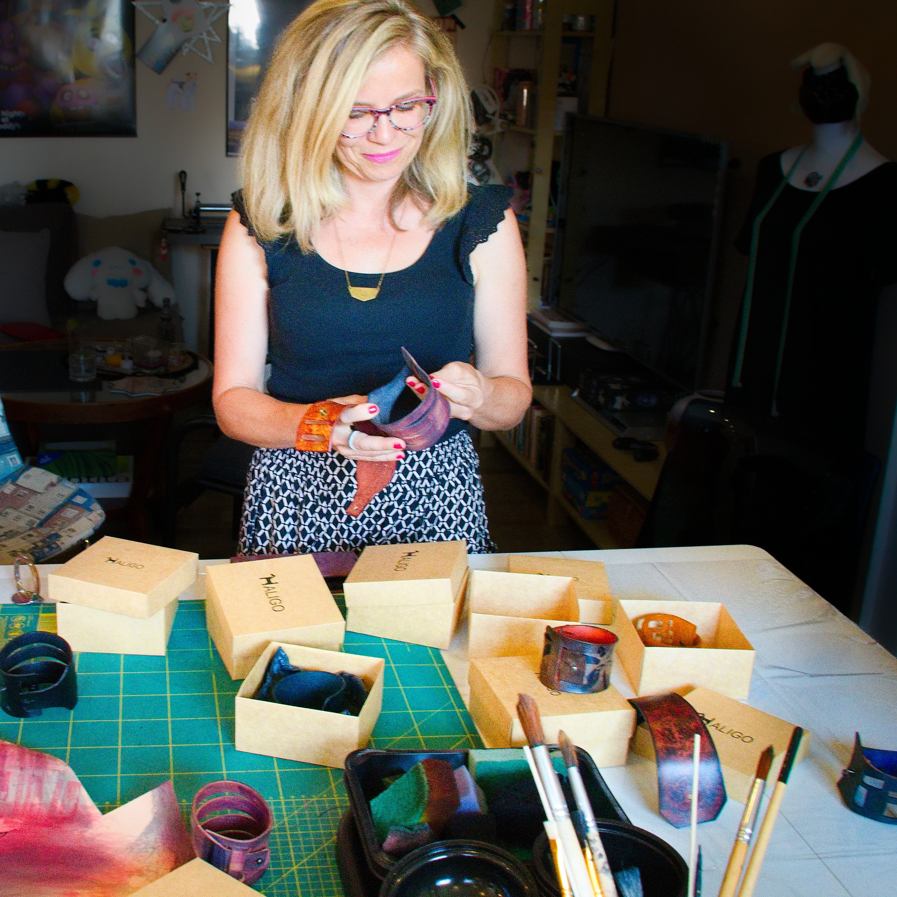
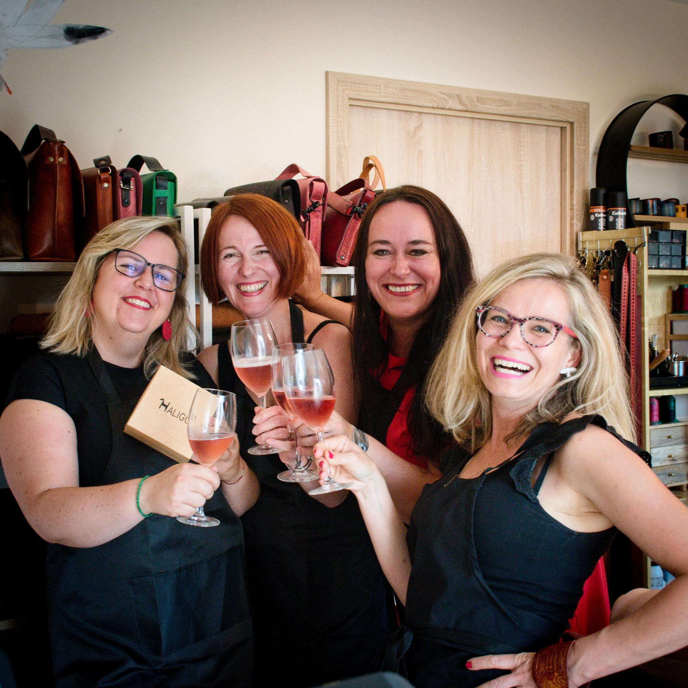
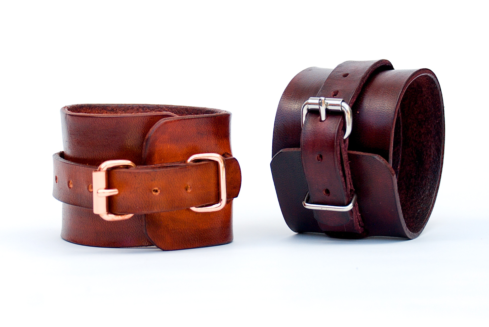
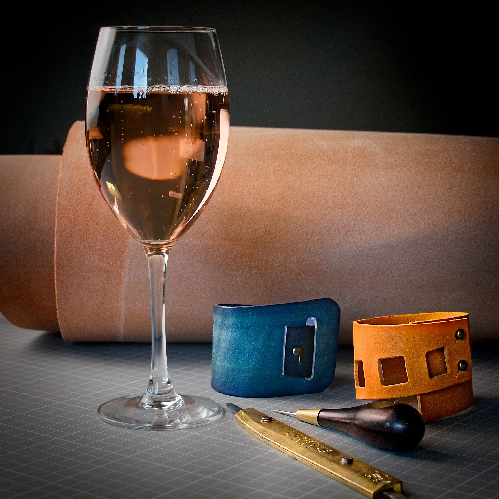

Autorská řada
ESSENZA
Ručně barvená tuzemská kůže s neotřelým procesem patinování. Autorský design pro ty, kteří vyhledávají jedinečný charakter doplňků.
Vstoupit do ESSENZA
Ten okamžik, kdy ji vezmete do ruky, vyjdete na ulici a ostatní se za vámi otočí…
První autorská kabelka HALIGO vznikla z prosté touhy zakladatelky mít jinou kabelku – takovou, která spojí osobitost s jednoduchostí.
Profesní svět daní a čísel doplnila o sedlářský nůž, kvalitní kůži a preciznost tradičního řemesla. Oživila rodinný kód sahající k počátku minulého století. Navázala na své sudetské předky – pokrokovou babičku, designérku své doby, a prastrýce, prvorepublikového elegána, mistra pánské krejčoviny v legendárním ostravském módním domě.
Tento odkaz přetavila do kolekce minimalistických luxusních kabelek, kde každý kus vypráví svůj vlastní příběh. Výrazný autorský rukopis, autentický materiál a preciznost v každém detailu.
Dnešní HALIGO staví na kontrastu dvou specifických přístupů k materiálu, které spojuje čistá geometrie, minimalistická estetika a nekompromisní kvalita.
Ručně barvená tuzemská kůže s neotřelým procesem patinování. Autorský design pro ty, kteří vyhledávají jedinečný charakter doplňků.
Vstoupit do ESSENZAMinimalistické řady z certifikovaných italských usní s ochrannou známkou PELLE CONCIATA AL VEGETALE IN TOSCANA. Kůže časem získává unikátní patinu.
Vstoupit do DOLLIDAKomorní tvořivé odpoledne u pracovního stolu, s vůní pravé kůže, kávou nebo sklenkou vína. Pod mým vedením si krok za krokem vyrobíte vlastní kožený doplněk a odnesete si nejen hotový výrobek, ale i zážitek z autorské tvorby.

Vytvoříte originální kožený náramek z vysoce kvalitní přírodní hovězí usně z tuzemské koželužny. Sami navrhnete jeho tvar i velikost a projdete celým procesem vzniku.
Termíny workshopu• 11. září 2026
• 25. září 2026Bližší informace a rezervace najdete v e-shopu.
Koná se při minimálním počtu 3 účastníků.
Celý termín pro uzavřenou skupinu 4 osob: 4 200 Kč.
Samostatný celodennější workshop, při kterém vznikne promyšlená kabelka z kvalitní pravé kůže. Nejde o zjednodušenou dekoraci, ale o skutečně použitelný autorský výrobek, který je možné zvládnout během přibližně šesti hodin.








Pravá kůže je přírodní materiál. Její kresba, drobné nerovnosti i proměny odstínu jsou součástí jejího charakteru a používáním získává vlastní patinu.
Výrobek chraňte před promočením, dlouhodobým působením slunce, silným znečištěním a mechanickým poškozením. Kůži nikdy neperte. Při běžném znečištění ji jemně otřete vlhkým hadříkem a podle potřeby ošetřete vhodným přípravkem určeným na pravou useň.
Skladujte jej v suchu a bez zbytečného zatížení. Správná péče pomůže zachovat vlastnosti kůže a nechá ji přirozeně stárnout do krásy.
Ke každé kabelce obdržíte jako dárek ošetřující balzám HALIGO s včelím voskem, aby si kůže zachovala svou krásu a přirozený charakter.